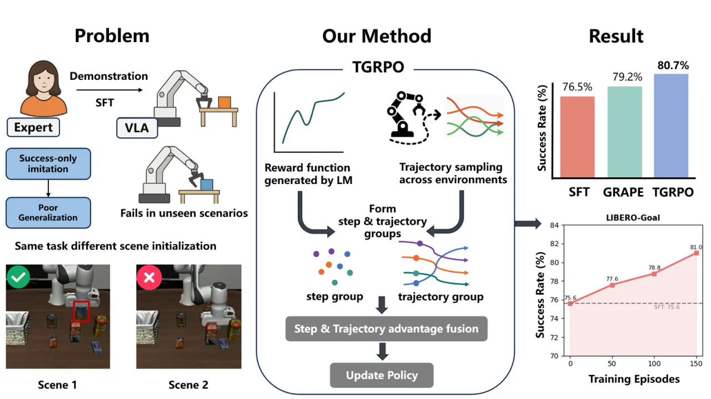
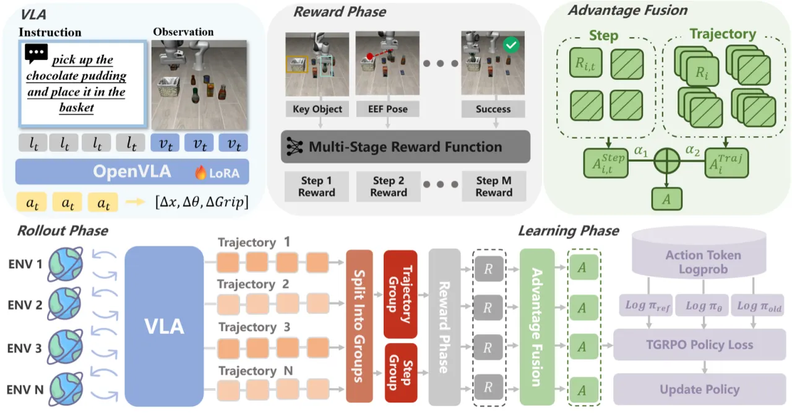
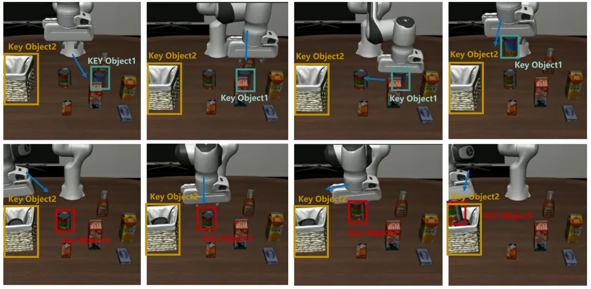
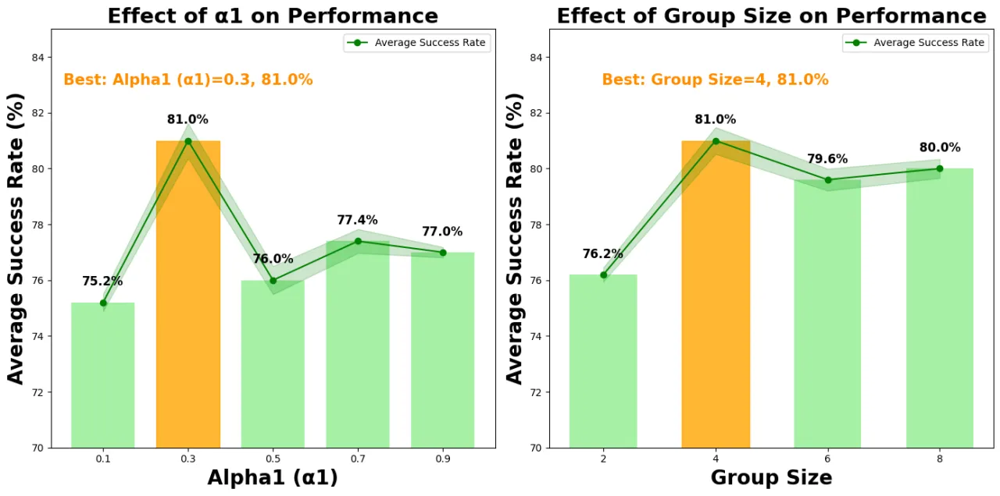
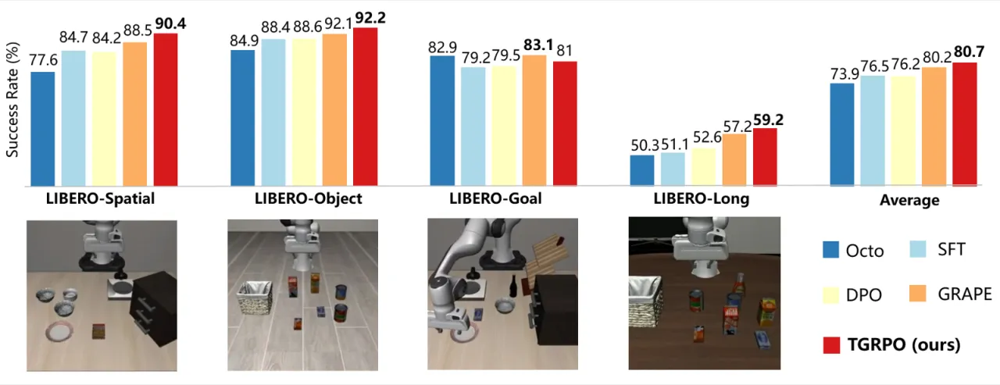

TGRPO 针对 VLA 模型依赖成功演示数据、无法从失败中自我学习的根本缺陷，提出了一种基于轨迹分组的在线 RL 微调框架：以 LLM 自动生成多阶段密集奖励取代稀疏二值反馈，再通过步骤级与轨迹级双层优势估计融合来降低策略梯度方差，在 LIBERO 四项基准上实现平均 80.7% 成功率，比 SFT 提升 4.2%。
VLA 模型的 SFT 范式将机器人局限于"动作记忆"，无法自主探索与自我修正。稀疏的二值奖励信号则让在线 RL 训练极为困难——这正是 TGRPO 要解决的两大核心矛盾。
"VLA models trained solely on human-provided successful demonstrations … lacks the ability to learn from failures, restricting autonomous exploration and self-correction capabilities. Additionally, reward signals in real-world robotic tasks are often highly sparse, frequently reduced to binary success/failure feedback."

Group Relative Policy Optimization (GRPO) 通过在组内归一化奖励来估计优势，无需额外的 Critic 网络，已在 LLM 数学推理中展现出色效率。然而直接迁移到机器人操作面临两大障碍：①机器人任务奖励极稀疏，组内方差过大导致梯度估计不稳定；②原版 GRPO 以单步 token 为粒度，与轨迹级别的机器人任务不匹配。TGRPO 通过多阶段密集奖励设计与双层分组策略解决这两点。
TGRPO 在相同初始状态下采样多条轨迹，以 LLM 分解任务并生成多阶段密集奖励，再同时在步骤级和轨迹级两个粒度上估计优势并加权融合，最终以 PPO 风格的 clipped surrogate loss 更新策略——全程无需 value network。

针对稀疏奖励问题，作者借助 LLM 将每个任务分解为 K 个子阶段，并为每阶段定义基于物体位姿与末端执行器位姿的奖励函数：
Rt = f₁(Pobject(t), Pkpose) + f₂(Pkpose, st)
其中 f₁ 根据任务相关物体与目标位姿的距离给分，f₂ 根据末端执行器与参考位姿的距离（来自成功演示数据）给出密集引导信号。这一设计将二值成功/失败信号转变为连续、分阶段的稠密反馈，大幅降低了 RL 训练难度。

TGRPO 同时在两个粒度上计算优势：
两者线性融合为最终优势：Advi,t = α₁Ai,t + α₂Ai，消融实验确定最优权重 α₁=0.3，α₂=0.7。最终使用 PPO 风格的 clipped surrogate loss 并加 KL 正则项约束策略漂移，无需额外 Critic 网络。

在 LIBERO 基准的四个子集（各含 10 项任务）上评估，每任务 50 个测试 episode；基座模型为 OpenVLA（LoRA 微调，AdamW lr=1×10⁻⁵），4 个并行环境；基线包括 Octo、SFT、DPO、GRAPE。
| 测试集 | Octo | SFT | DPO | GRAPE | TGRPO（本文） |
|---|---|---|---|---|---|
| LIBERO-Spatial | 77.6% | 84.7% | — | 88.5% | 90.4% |
| LIBERO-Object | 84.9% | 88.4% | — | 92.1% | 92.2% |
| LIBERO-Goal | 82.9% | 79.2% | — | 83.1% | 81.0% |
| LIBERO-Long | 50.3% | 51.1% | — | 57.2% | 59.2% |
| 平均 | 73.9% | 75.9% | — | 80.2% | 80.7% |
TGRPO 在 Spatial、Object、Long 三个子集上超越所有基线；在 Goal 子集上（81.0%）略低于 GRAPE（83.1%），低于 Octo（82.9%）。作者注：LIBERO-Goal 任务的多样目标条件使 LLM 生成奖励时有一定噪声。

| 方法 | Task0 | Task1 | Task2 | Task3 | Task4 | Task5 | Task6 | Task7 | Task8 | Task9 | 平均 |
|---|---|---|---|---|---|---|---|---|---|---|---|
| SFT | 86 | 76 | 90 | 74 | 92 | 92 | 98 | 92 | 92 | 92 | 88.4% |
| w/o Trajectory-level | 88 | 56 | 86 | 60 | 92 | 82 | 92 | 92 | 92 | 60 | 80.2% |
| w/o Step-level | 78 | 78 | 98 | 58 | 94 | 82 | 96 | 96 | 92 | 96 | 86.8% |
| TGRPO（完整） | 88 | 82 | 98 | 76 | 98 | 94 | 98 | 98 | 94 | 96 | 92.2% |
去除轨迹级优势（→80.2%）和去除步骤级优势（→86.8%）均显著低于完整方法（92.2%），证明两个层级的优势估计缺一不可。Task1 和 Task3 在去除轨迹级优势后下降尤为明显，说明宏观轨迹质量信号对部分任务至关重要。
所有实验在 LIBERO 模拟器中进行，作者明确指出未来工作方向为"extend TGRPO to real-world and multi-task settings"。真实机器人的传感器噪声、接触动力学和状态估计误差对密集奖励计算的鲁棒性尚未评估。
多阶段奖励的生成需要 LLM（Claude 3.7 Sonnet）对任务进行分解，并在运行时访问仿真器提供的精确物体位姿（Pobject(t)）和末端执行器状态。在无法获取完整状态观测的真实场景中，该奖励设计需要额外的感知模块支持，增加了部署复杂度。
每个实验仅对单一任务进行 RL 微调（"single task per experiment"），尚未验证 TGRPO 在多任务联合训练设置下的性能与稳定性。LIBERO-Goal 子集上略逊于 GRAPE 和 Octo 也暗示目标条件多样性下的泛化仍有改进空间。